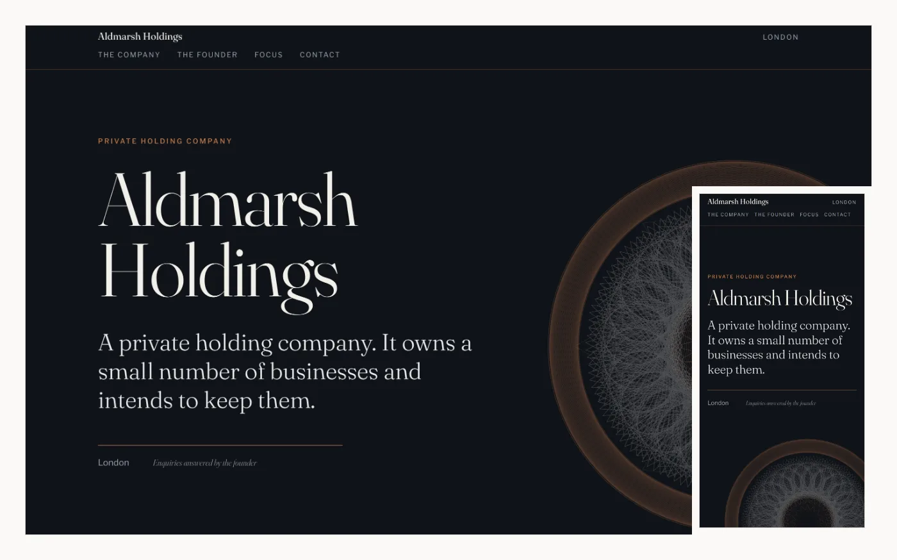
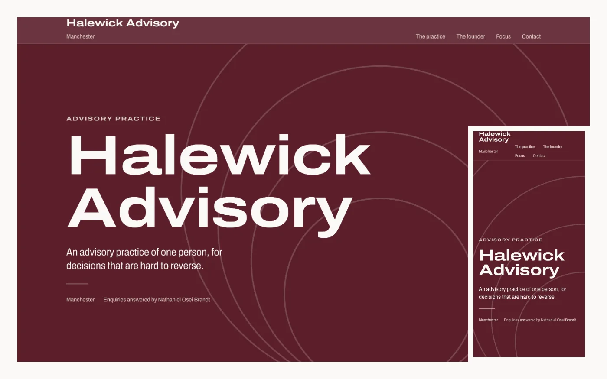
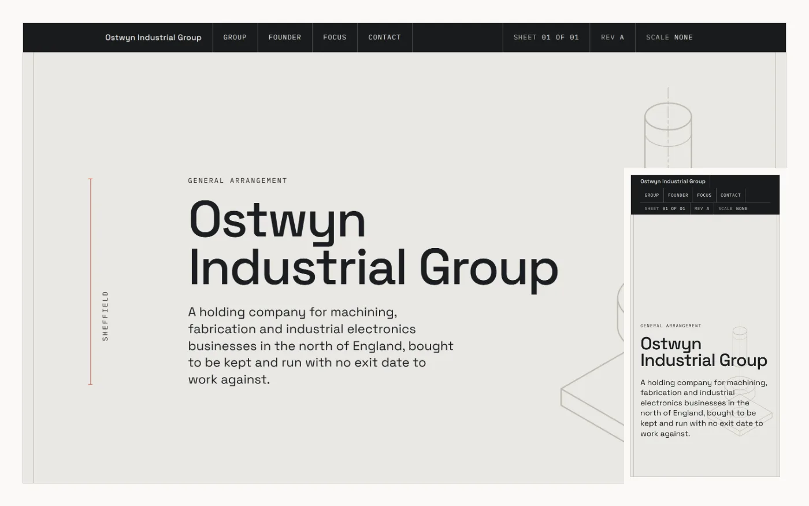

-
01 Holding company

Aldmarsh Holdings
London
A private holding company. It owns a small number of businesses and intends to keep them.
Dark all the way down, one bone-coloured band under the founder, copper on the rules and the links. The engine-turned rosette is three drawn layers that counter-rotate as the hero scrolls.
Fraunces and Libre Franklin
-
02 Advisory practice

Halewick Advisory
Manchester
An advisory practice of one person, for decisions that are hard to reverse.
A poster rather than a document: oxblood fields alternating with paper, everything snapped to a six-column grid, and four oversized arcs that finish their stroke once. One variable family across its axes.
Archivo, one file, two axes
-
03 Industrial group

Ostwyn Industrial Group
Sheffield
Machining, fabrication and industrial electronics businesses in the north of England, bought to be kept.
A drawing sheet. The title block is the sticky masthead, the dimension rules live out in the margins, and the exploded assembly separates along its isometric axis as you scroll.
Space Grotesk and IBM Plex Mono